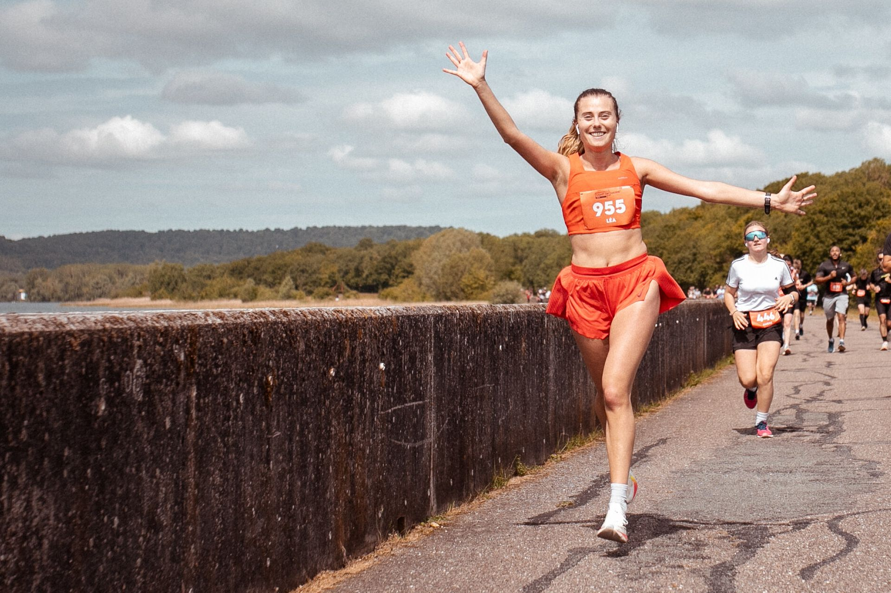
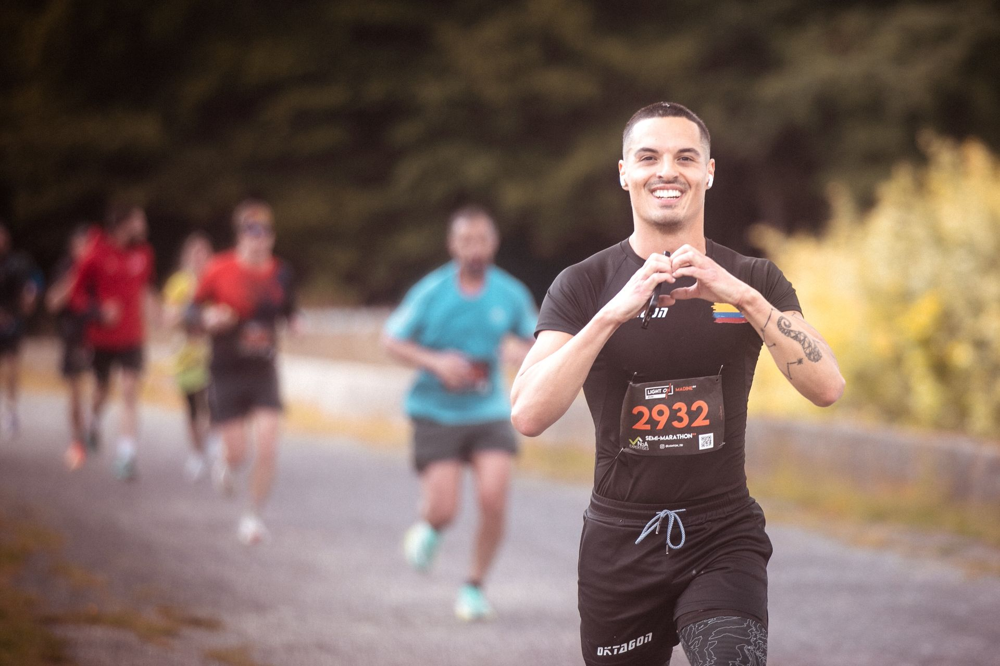
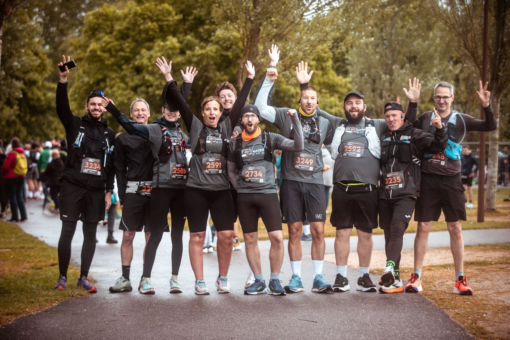
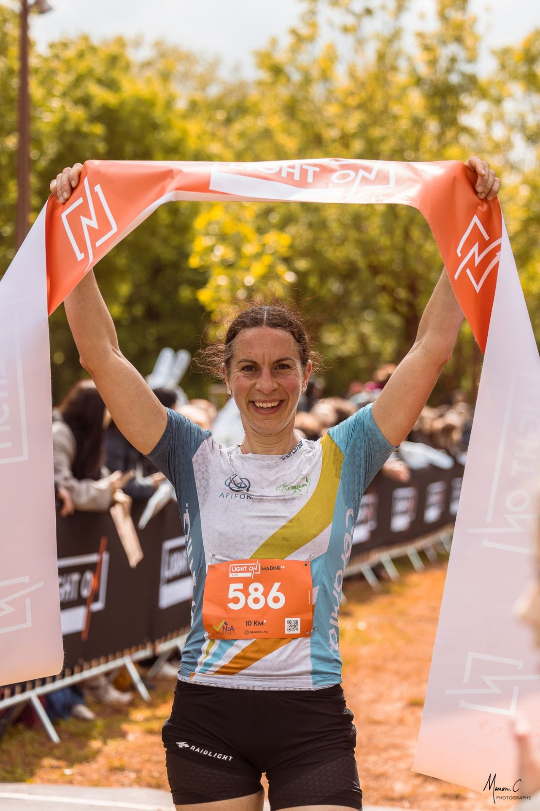
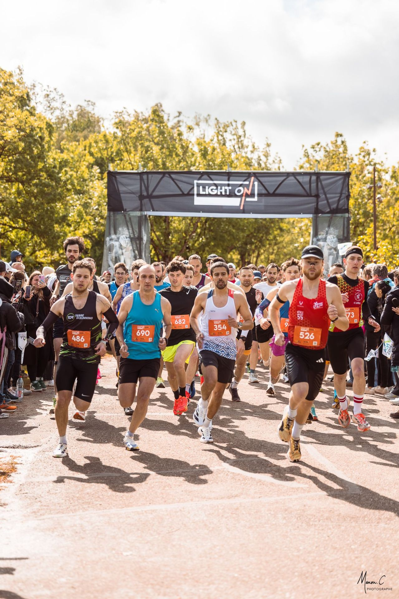
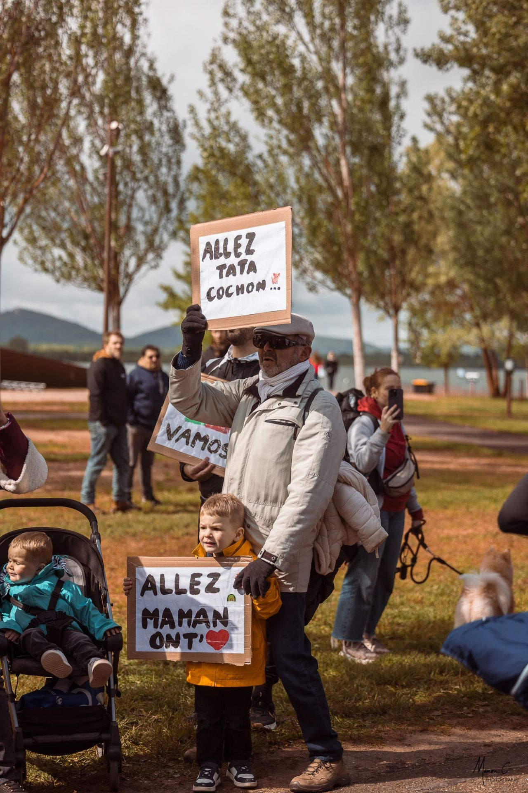
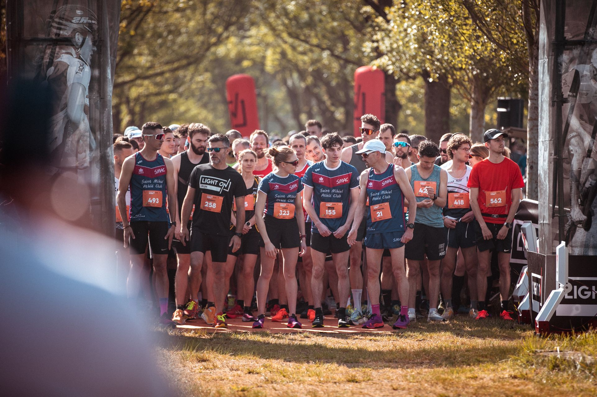

Light On Run Madine**
10 ou 21,1 KM : deux distances, un seul lac.
Une seule règle : en profiter.
L'essentiel
- Date
- Jeudi 6 mai 2027Dossards dès le mercredi 5 mai
- Lieu
- Lac de MadineDépart et arrivée à Nonsard-Lamarche (Meuse)
- Distances
- 10 KM* · Semi-Marathon**21,1 km, parcours à plat
- Départs
- 9h00 · 11h00Le semi part en premier, le 10 km à 11h00
- Tarifs
- 19 € · 24 €10 KM* tarif unique, Semi-Marathon** tarif de lancement. Inscriptions ouvertes
- Organisation
- LIGHT ONÉdition 2026 : près de 2 800 coureurs au départ
Les courses**
Entre rive et forêt, pour courir sa première course ou viser un chrono sans se soucier du dénivelé.

Le grand tour du lac, trois ravitaillements sur le parcours et une ligne droite finale pour tout donner.

Ce qu'ils en disent.
C'était une très belle course avec alternance de plusieurs terrains et une belle balade autour du lac !
C'est une course géniale, le parcours, l'ambiance étaient super !
Tout était super, c'était mon premier semi et j'ai trouvé ça super bien organisé.
2e année consécutive sur le semi, toujours un très bon moment passé au lac de Madine !
Je reviendrai en 2027, c'est sûr ! Merci à tous les bénévoles.
Glissez pour lire la suite
Ce sont leurs mots, pas les nôtres. Les prochains, c'est vous qui les écrirez.
S'inscrireLe goût de l'effort, grandeur nature.
Le Lac de Madine, l'un des grands plans d'eau de la Meuse, et un parcours à plat qui fait le tour de la rive du départ à l'arrivée.
La course, et tout ce qu'il y a autour.
Dossards la veille, courses le jeudi, Village LIGHT ON ouvert dès le mercredi. Les supporters sont les bienvenus (leurs encouragements aussi).
Le programme
Mercredi 5 mai, retrait des dossards de 17h à 19h. Jeudi 6 mai, Welcome Drink au retrait des dossards, départs à 9h00 et 11h00, remise des récompenses à 12h15.
Le Village LIGHT ON
Départ, arrivée et médaille pour chaque finisher, ravitaillement final, stands : tout se passe au même endroit, au bord du lac.
Préparer sa venue
Accès, hébergements, matériel, FAQ : l'essentiel avant le départ.
Retour sur 2026.
Près de 2 800 coureurs sur le 10 KM* et le Semi-Marathon**. Voilà à quoi ça ressemblait.





Quoi de neuf ?
Cap sur l'édition 2027
Rendez-vous le jeudi 6 mai 2027 au bord du Lac de Madine, avec le Village LIGHT ON ouvert dès le mercredi.
Les inscriptions sont ouvertes
Le 10 KM* et le Semi-Marathon** vous attendent, le semi à 24 € en tarif de lancement. Il ne reste qu'à choisir.
Rejoindre le LIGHT ON Crew
Ravitaillements, fléchage, Village LIGHT ON : sans bénévoles, pas de course. L'appel pour 2027 passera par la newsletter et nos réseaux.

On se voit sur la ligne de départ ?
Choisissez votre distance, les inscriptions sont ouvertes.
soutiennent